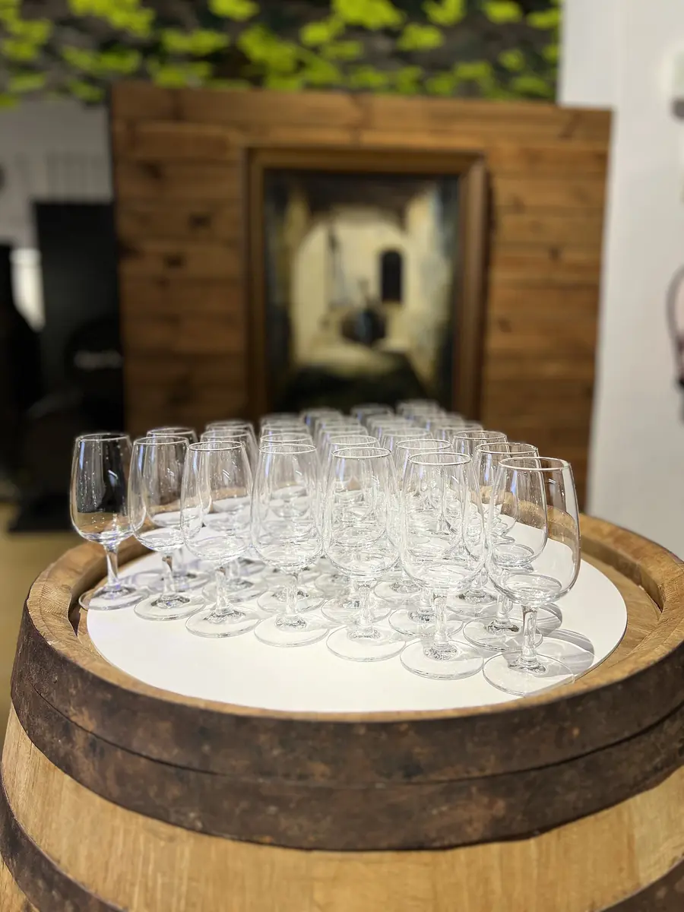

Escríbenos para venir
Cuéntanos qué visita quieres, qué día y con cuántas personas vienes. Es una web de demostración: el botón solo prepara un borrador de correo para una dirección de ejemplo.
Reserva o pregunta
Esta web es una demostración: el formulario no envía ni guarda nada. Al pulsar el botón se intenta abrir tu programa de correo con un borrador dirigido a una dirección de ejemplo; lo que escribas se queda aquí.
Dónde estamos
Bodega Bota ChicaCalle Cinco Sextos, 9
11403 Jerez de la Frontera, Cádiz
hola@botachica.example
- Martes a sábado
- De 11:00 a 19:00
- Domingo y lunes
- Cerrado
- Agosto
- Solo por la mañana
Cómo llegar
Desde el centro de Jerez se viene andando en diez minutos: se sube hacia el barrio de Santiago y, al llegar a la calle Cinco Sextos, la bodega es la puerta de madera grande a mitad de la calle. En coche, lo más cómodo es dejarlo en el aparcamiento público y terminar a pie, porque la calle es estrecha y no tiene sitio para aparcar.
Si vienes en grupo o con alguien en silla de ruedas, avísanos: abrimos la puerta grande, que no tiene escalón.
Lo que verás al entrar

La nave, con las botas a los dos lados. 
La flor, en una bota de muestra. 
Las canoas para rociar el vino. 
La mesa de la cata, al fondo.